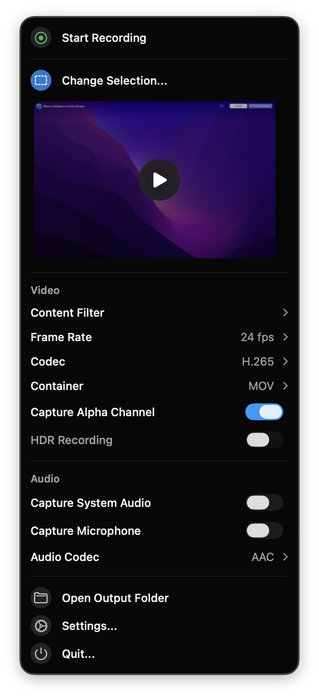
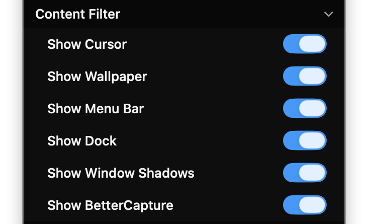
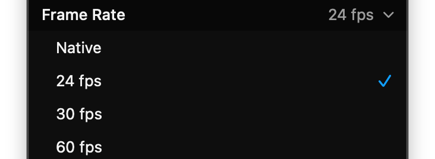

Lightweight, native, and 100% private. Record full screen, custom regions, or single apps with dual audio streams (system & mic), HEVC/H.264 compression, and zero third-party audio drivers.
Engineered from the ground up for modern macOS versions, prioritizing ultra-low latency, crisp image quality, and total user privacy.
Direct integration with Apple ScreenCaptureKit framework ensures low CPU usage and zero frame stutter even at 4K 60fps.
Captures crisp system audio and microphone input simultaneously into independent audio tracks for seamless post-production editing.
Keep your recordings uncluttered. Automatically exclude cursor pointers, desktop wallpapers, menu bars, and docks.
No heavy Chromium shells, no Node.js runtimes, and no bloated background daemons. Lives quietly in your menu bar until needed.
Trigger recordings effortlessly from Raycast, Alfred, Apple Shortcuts, or shell scripts via custom lightrecorder:// deep links.
toggle-copy copies path straight to clipboard
All videos are written directly to your local storage. No accounts, no sign-ins, no cloud telemetry, and zero surveillance.
Whether you need an entire multi-display setup, a sharp cropped UI element, or a clean single app window.
Target any display attached to your Mac at its native Retina pixel resolution or downscaled 1x logical resolution for smaller file sizes.

Drag an interactive marquee over any portion of your desktop. Snaps coordinates cleanly with live pixel dimension indicators.

Use the macOS Content Sharing Picker to target an individual application window or process canvas without showing your desktop.

LightRecorder implements the lightrecorder:// URL scheme, allowing seamless integration with Raycast extensions, Alfred workflows, Apple Shortcuts, and terminal scripts.
lightrecorder://toggle
Toggles recording immediately using active capture mode.
lightrecorder://toggle-copy
Toggles recording and copies the resulting file path to your clipboard upon completion.
lightrecorder://open-recordings
Reveals the configured recording destination folder in Finder.
# 1. Start or stop recording from terminal
open "lightrecorder://toggle"
# 2. Stop and copy finalized file path to clipboard
open "lightrecorder://toggle-copy"
# 3. Reveal output folder in Finder
open "lightrecorder://open-recordings"
# 4. Integrate into Raycast Script Command:
# @raycast.schemaVersion 1
# @raycast.title Record Screen
# @raycast.mode silent
open "lightrecorder://toggle"A native alternative to bloated Electron screen capture tools and complicated virtual audio drivers.
| Feature | LightRecorder | QuickTime Player | OBS Studio | Cloud Recorders (Loom) |
|---|---|---|---|---|
| Internal System Audio | ✓ Built-in (ScreenCaptureKit) | ✗ Needs Soundflower/BlackHole | ✓ macOS Screen Audio plugin | ✓ In-app driver |
| Simultaneous Microphone | ✓ Separate isolated track | ✗ Single source only | ✓ Multi-track | ✗ Mixed single track |
| Privacy & Zero Telemetry | ✓ 100% Local, 0 Analytics | ✓ Local | ✓ Local | ✗ Cloud uploads & tracking |
| Resource Footprint | Ultra-light (<30MB RAM) | Low (~60MB RAM) | Heavy (~300MB+ RAM) | Heavy Electron (>500MB RAM) |
| URL Scheme Automation | ✓ lightrecorder:// |
✗ Limited AppleScript | ✗ Websocket RPC only | ✗ None |
| Pricing & License | Free & Open Source (MIT) | Bundled with macOS | Free (GPL) | Subscription ($12.50+/mo) |
Everything you need to know about LightRecorder's features, permissions, and system architecture.
~/Movies/LightRecorder. You can change this to any folder on your Mac in the LightRecorder Settings. LightRecorder maintains a security-scoped bookmark to retain access across system restarts.
.mov or .mp4 containers. High, Medium, and Low bitrate presets automatically scale bits-per-pixel to match your display resolution.
Install LightRecorder today. No accounts, no subscriptions, and your data never leaves your Mac.
brew install lightrecorder